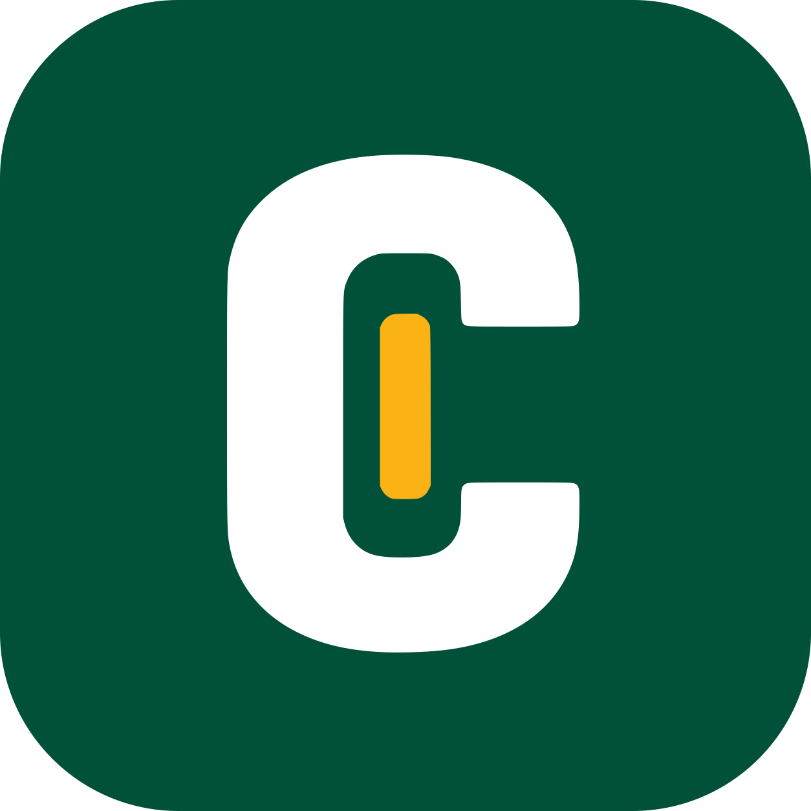

Centline
In testingA phone app for truck drivers who own one truck. Every load is one record, from the day it’s booked to the day it’s paid.
My dad has driven a truck for 35 years, and the paperwork is the hardest part of his job. I built Centline to take that off his day. I design and build it on my own, and it’s in testing now.
- 5,888tests passing
- 144pull requests merged
- 28design specs before code